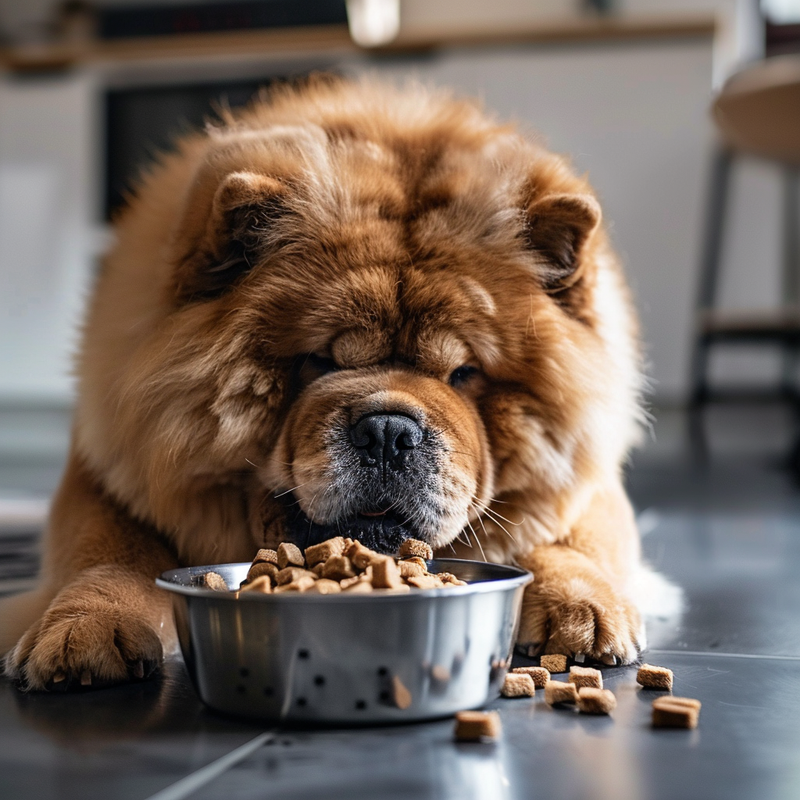
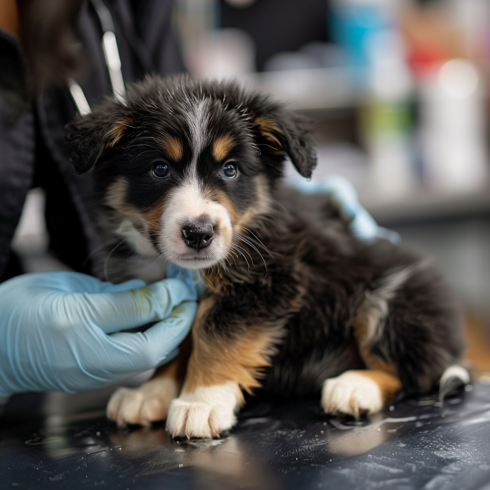
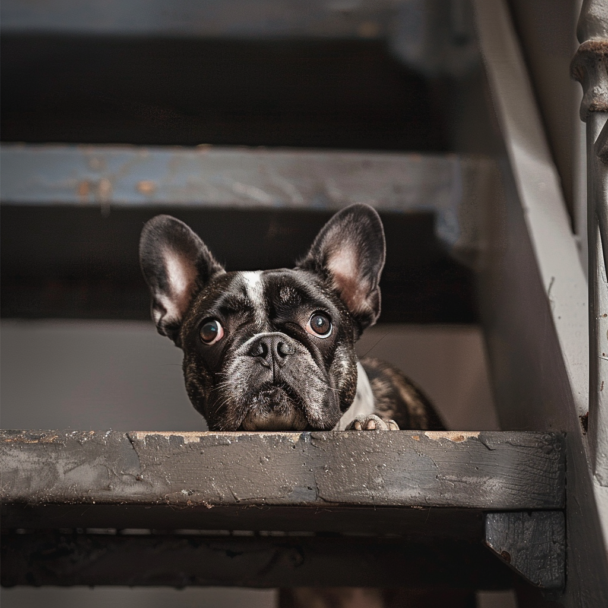
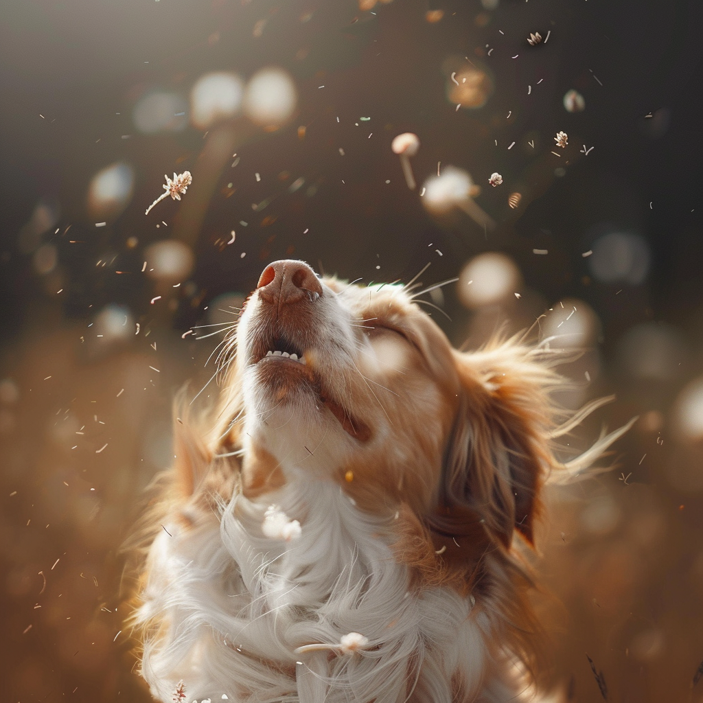
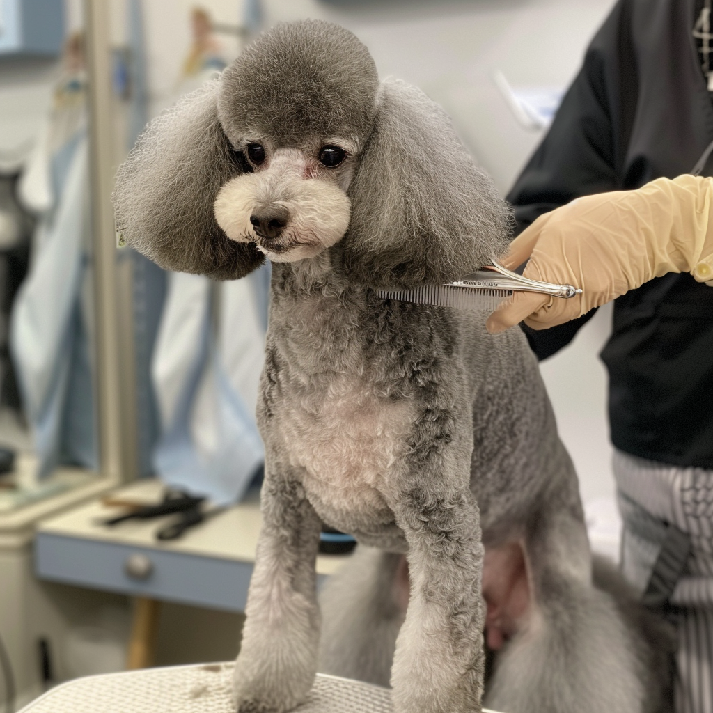

Sundhed & Pleje
Fra kost og motion til mental sundhed - udforsk alle aspekter
af din hunds
velbefindende her.
Pleje af din hund fra snude til hale
I vores 'Sundhed og velvære' sektion finder du alt hvad du har brug for at vide for at
holde din hund
sund, glad og strålende. Udforsk vores artikler, vejledninger og tips om alt fra
ernæring
og motion
til forebyggelse af sygdomme og mental trivsel. Vi er her for at hjælpe dig med at give
din
hund den
bedst mulige pleje og opmærksomhed, så I kan nyde et langt og kærligt liv sammen.

Godbidder og kosttilskud:
Sundhedsfordele og anbefalinger.
Tandpleje for hunde:
Sådan bevarer du en sund mundhygiejne.

Gør din hvalp klar til foråret:
Vigtige vaccinationer og sundhedstjek.

Sikkerhedsforanstaltninger derhjemme:
Forebyggelse af ulykker og skader.

Forårsklar med din hund:
Sådan håndterer du forårsallergier og insektbid.
